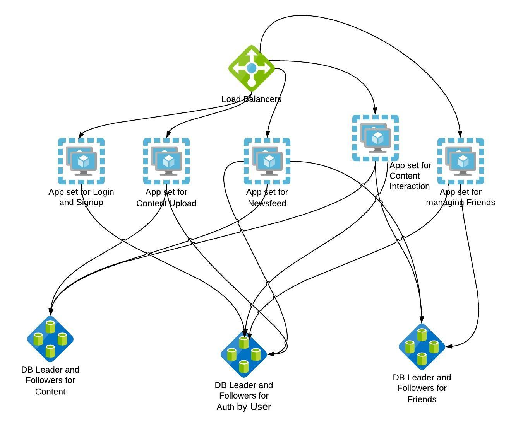

可擴展性
對系統/服務來說，可擴展性是什麼意思？ 系統由服務/元件組成，每個服務/元件的可擴展性需要分別解決，並且考慮整個系統的可擴展性。
當系統資源增加時，如果系統的效能能夠與資源增長成正比提升，該服務即稱為可擴展的。
一個「永遠在線」的服務，若能添加資源促進冗餘，且不導致效能下降，即稱為可擴展的。
參考
可擴展性：AKF Scale Cube
Scale Cube 是一個用於服務分割、定義微服務及產品擴展的模型。它也為團隊提供了一種通用語言，使得在設計解決方案時可以討論與擴展相關的選項。以下內容根據 AKF cube 的推論討論某些擴展模式。
可擴展性：水平擴展
水平擴展指的是複製應用程式或服務，使工作能夠公平地分配到各個實例中。
讓我們看看我們的單體應用如何因為這項原則而改進。
這裡，資料庫（DB）與應用程式分開擴展。這是為了讓你知道每個元件的擴展能力可能不同。通常，網頁應用可以透過追加資源進行擴展，除非應用內有儲存狀態。但資料庫只能透過增加更多追隨者來擴展讀取能力，寫入必須集中到一個主節點以確保資料一致性。有些資料庫支援多主節點寫入，但此處不包含討論範圍。
應用程式應能分辨讀取和寫入，選擇適當的資料庫伺服器。負載均衡器可透明地將流量分配到相同伺服器。
什麼是： 複製服務或資料庫以分散請求負載。
何時使用： 讀寫比例非常高（5:1或更高，比例越大越佳）的資料庫。因為只有讀取副本可以擴展，主節點無法。
如何使用： 簡單複製服務並加上負載均衡器。對資料庫而言，要讓存取程式碼能區分讀取與寫入。
為什麼： 允許快速擴展交易處理，但會增加資料與功能的複製成本。
重點結論： 實作快且開發成本低，能有效擴大量交易。但從維運資料的成本來看，成本可能較高。例如擁有 3 個追隨者和 1 個主節點時，相同資料將有四份拷貝佔用四台伺服器空間，增加存儲成本。
參考
可擴展性模式：負載均衡
提升工作負載於多個計算資源（如電腦、集群、網路連結、CPU、磁碟）間分配的效率。常見技術是將流量在相同伺服器叢集間負載均衡。類似的思維也會應用在透過 ECMP 的網路路由、RAID 的磁碟陣列等。
目標是優化資源使用率、最大化吞吐量、降低回應時間及避免單一資源過載。
使用多元件加上負載均衡器替代單一元件，可經由冗餘性提升可靠度與可用性。如本架構圖中有 4 台伺服器處理應用流量，而非單台伺服器。
負載均衡的裝置或系統稱為負載均衡器（Load Balancer，簡稱 LB）。
參考
- https://zh.wikipedia.org/wiki/負載平衡_(計算機)
- https://blog.envoyproxy.io/introduction-to-modern-network-load-balancing-and-proxying-a57f6ff80236
- https://learning.oreilly.com/library/view/load-balancing-in/9781492038009/
- https://learning.oreilly.com/library/view/practical-load-balancing/9781430236801/
- https://shop.oreilly.com/product/9780596000509.do
可擴展性模式：LB 任務
LB 做什麼？
服務發現 (Service discovery)：
系統中有哪些後端可使用？本架構中有 4 台伺服器可提供應用程式流量，LB 充當單一端點，供客戶端透明存取這 4 台中的任一伺服器。
健康檢查 (Health checking)：
目前哪些後端健康且可接收請求？若 4 台 App 伺服器中有 1 台失效，LB 會自動繞過該伺服器，讓客戶端感知不到停機。
負載均衡 (Load balancing)：
何種演算法用於將請求分配到健康後端？分配流量有多種演算法可選，SRE 可根據觀察與經驗挑選最適合的。
可擴展性模式：LB 方法
常見負載均衡方法
最少連接數法 (Least Connection Method)
將流量導向目前連線數最少的伺服器。適用於大量長期連線且流量伺服器間分布不均時。
最短回應時間法 (Least Response Time Method)
將流量導向連線數少且平均回應時間最低的伺服器。此法將回應時間作為伺服器健康的反饋。
輪詢法 (Round Robin Method)
以輪流方式將流量分派到下一個可用伺服器。適用於伺服器硬體規格相同且無大量長連線時。
IP 哈希法 (IP Hash)
根據客戶端 IP 決定將請求分配至哪台伺服器。可能造成流量分布不均，但適合應用在有本地狀態且需連線「黏著性」的場景。
更進階的客戶端/伺服器端技術範例：
- https://docs.nginx.com/nginx/admin-guide/load-balancer/
- https://cbonte.github.io/haproxy-dconv/2.2/intro.html#3.3.5
- https://twitter.github.io/finagle/guide/Clients.html#load-balancing
可擴展性模式：快取—內容傳遞網路 (CDN)
CDN 被部署在接近客戶端的位置。如果應用程式有靜態資料如圖片、JavaScript、CSS 等不常更改的內容，可以進行快取。因為範例是內容分享網站，靜態內容可使用 CDN 快取並設置合適的過期時間。
什麼是： 使用內容傳遞網路來分擔網站流量。
何時使用： 需要加速和擴展而願意付出額外成本的時候。
如何使用： 大多數 CDN 利用 DNS 代替網站提供內容。因此你可能需要進行少量的 DNS 修改或新增，並將內容移至新子網域提供。
例如
media-exp1.licdn.com 是 LinkedIn 用來提供靜態內容的域名
該域名透過 CNAME 指向 CDN 服務提供商的 DNS：
dig media-exp1.licdn.com +short
2-01-2c3e-005c.cdx.cedexis.net.
為什麼： CDN 有助於分擔流量高峰，且通常是擴展部分網站流量的經濟方案。也大幅提升頁面下載速度。
重點結論： CDN 是快速且簡單的方式，能抵禦流量尖峰和一般流量成長。但須做成本效益分析並監控 CDN 使用情況。若 CDN 快取率低（快取未命中率高），則無法有效減輕後端負擔。
可擴展性：微服務
此模式將工作依照應用程式內的服務或功能劃分。微服務旨在針對代碼庫與資料集增長與複雜度問題，透過故障隔離及降低回應時間來解決。
微服務可擴展交易、資料規模以及代碼規模。對擴展代碼庫規模與複雜度尤其有效。相比水平擴展，開發成本略高，因需要重寫服務或至少將其從原單體應用解耦出來。

什麼是： 有時稱為透過服務或資源擴展，著重透過按動詞（服務）或名詞（資源）分割資料集、交易與工程團隊來進行擴展。
何時使用： 非常大的資料集且資料間無須強關聯時。大型複雜系統，需透過專業分工來擴展工程人力。
如何使用： 透過動詞切分操作或用名詞劃分資源，亦可混合使用。依此劃分服務及資料。
為什麼： 允許有效地擴展交易與非常大的相關資料集，也能有效擴張團隊。
重點結論： 微服務有助於高效擴展交易、龐大資料及故障隔離。減少團隊溝通負擔，代碼庫更簡潔，將非關聯功能模組化為獨立服務，使每個服務可依需求獨立擴展。
參考
可擴展性：分片 (Sharding)
此模式根據交易時查詢或決定的屬性拆分工作。常見實作為根據請求方、客戶或用戶拆分。
經常需撰寫查詢服務或決定演算法以支援此類拆分。
分片幫助擴展交易成長、指令集量以及縮短處理時間（因限制需處理的資料量）。特別適合擴展大量客戶群。能有助於災難復原，並將事故影響限定於特定客戶區域。
此例根據使用者名稱對驗證資料進行分片，因為查詢涉及資料量大幅減少，資料庫回應速度加快。
也有其他分片方式
此例將整個資料中心拆分並複製，根據客戶地理位置指派資料中心。此法提升效能，因客戶會連線最接近的資料中心，且增加資料中心數量可進一步提升效能。但須注意資料複製與一致性成本。此外可實現故障容忍，例如先在特定站點滾動發布新功能，發現問題再於該區域回滾。
什麼是： 常依客戶獨特屬性如 ID、名稱、地理位置等拆分。
何時使用： 巨大且成長快速的相似資料集（如龐大客戶基礎），或地理分布廣泛客戶需要快速回應時。
如何使用： 找出關於客戶的屬性（例如客戶 ID、姓名、地理位置、裝置等），並基於該屬性拆分或分區資料與服務。
為什麼： 客戶快速成長超越其它資料型態，或需在擴展期間對特定客戶群進行故障隔離。
重點結論： 分片對擴展客戶群非常有效，但亦可用於其它難以用微服務方法拆分之超大型資料集。
參考
在 SRE 角色的應用
- SRE 與網路團隊合作，研究如何將用戶流量映射至特定站點。 https://engineering.linkedin.com/blog/2017/05/trafficshift--load-testing-at-scale
- SRE 與開發團隊密切合作，將單體拆分為多個易運行和管理的微服務。
- SRE 致力於提升負載均衡器的可靠性、服務發現與效能。
- SRE 配合拆分資料成分片，管理資料正確性與一致性。 https://engineering.linkedin.com/espresso/introducing-espresso-linkedins-hot-new-distributed-document-store
- SRE 工作包括設定、配置並提升 CDN 的快取命中率。